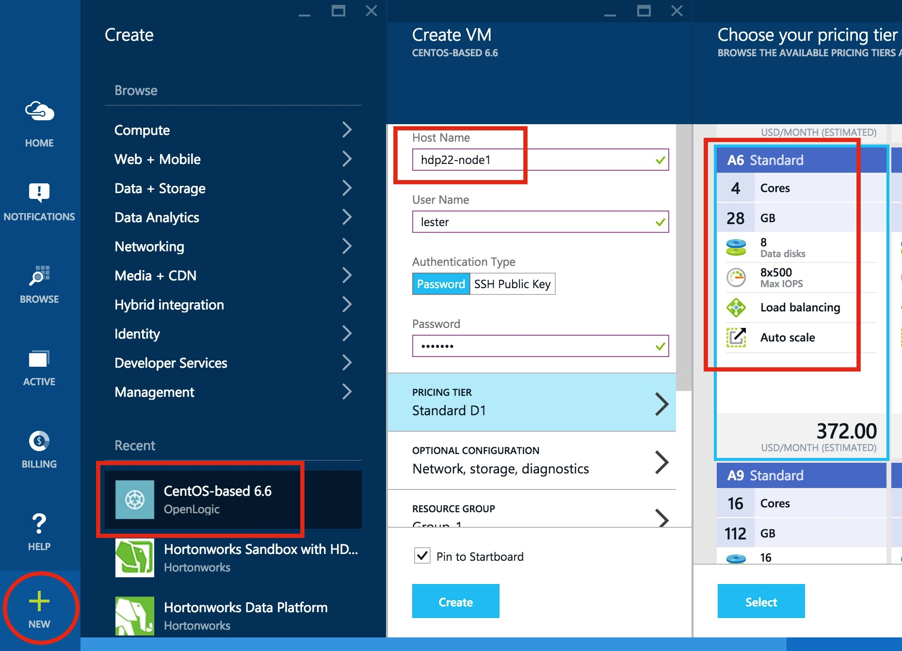
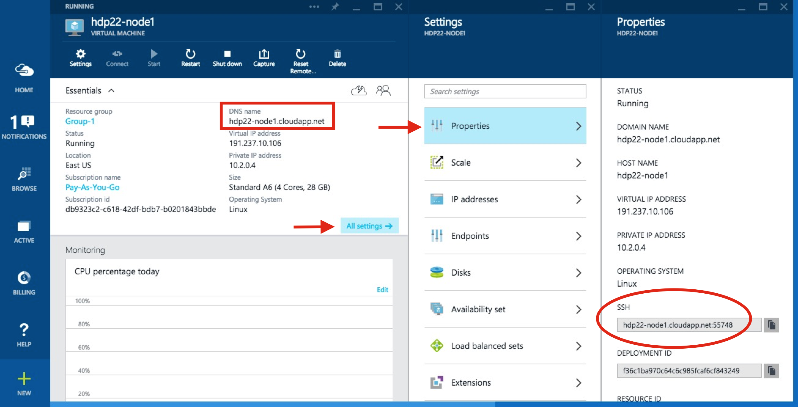
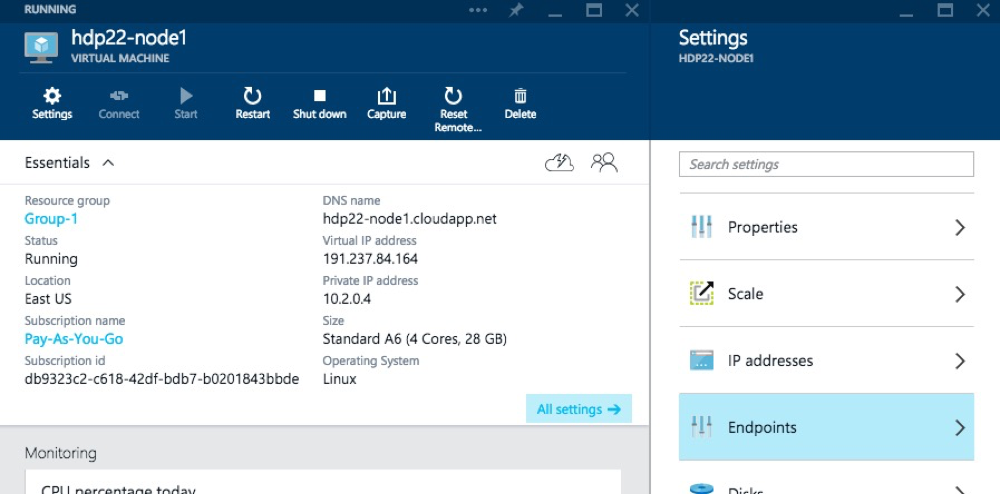
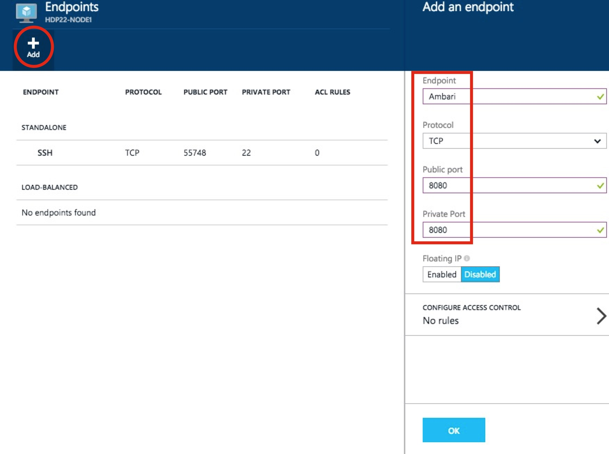
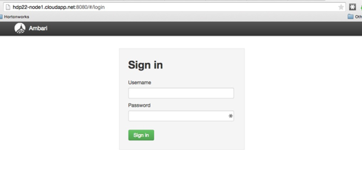
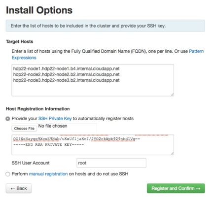
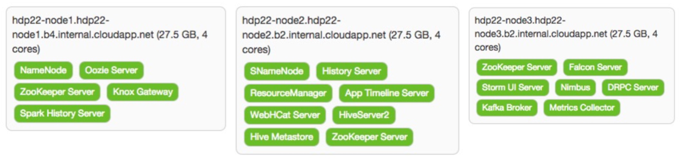
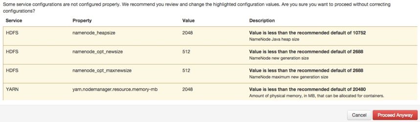
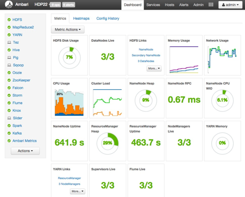

installing hdp 2.2 with ambari 2.0 (moving to the azure cloud)
2015-05-06 · Lester Martin
I've got a lot of miles running small testing clusters leveraging VirtualBox VMs based on the write up I did a while back at building a virtualized 5-node HDP 2.0 cluster (all within a mac), but as the comments section suggests, it is time to move to the cloud. HDP is continuing to grow and the 2.2 stack I've installed that way simply has more components than it did several months ago in the 2.0 version and these clusters are starting to crawl. Innovation waits for no one!
Despite my staunch recommendations at a robust set of hadoop master nodes (it is hard to swing it with two machines) for strong node stereotypes, I've also decided I would start this cluster out with only three nodes total. Yes, I'm going to make them all masters AND workers. If it wasn't clear... that's NOT what I'd recommend for any "real" cluster. I am mainly thinking of the costs I'm about to incur and this will still be much, much more than I usually run in my VirtualBox VMs on my mac.
So... let's get started!

As you see above, I decided to use the OpenLogic CentOS 6.6 VM image that Azure has. I identified the hostname as hdp22-node1 and I'm betting you can guess what the other two names will be. I then let it get provisioned and requested for it to be started. From the next screenshot, you can find the domain name for this server.

You can also find the specific port needed to make an SSH connection which I was able to connect from my mac as shown below.
HW10653:azure lmartin$ ssh -p 55748 lester@hdp22-node1.cloudapp.net
Warning: Permanently added '[hdp22-node1.cloudapp.net]:55748,[191.237.10.106]:55748' (RSA) to the list of known hosts.
lester@hdp22-node1.cloudapp.net's password:
[lester@hdp22-node1 ~]$ hostname -f
hdp22-node1.hdp22-node1.b4.internal.cloudapp.net
[lester@hdp22-node1 ~]$ sudo -s
We trust you have received the usual lecture from the local System
Administrator. It usually boils down to these three things:
#1) Respect the privacy of others.
#2) Think before you type.
#3) With great power comes great responsibility.
[sudo] password for lester:
[root@hdp22-node1 lester]# whoami
root
[root@hdp22-node1 lester]# cd ~
[root@hdp22-node1 ~]# pwd
/root
[root@hdp22-node1 ~]#
I also echoed out the internal hostname that will be using later during the Ambari install to reference all of the hosts by as well as verified I could become root. Next up is tackling the disk configurations, so let's see what this new host has right now.
The second and third filesystems shown above are for Azure as described here, so let's just ignore them. The root file system has about 25GB free which is in line with HDP 2.2's File System Partitioning Recommendations for the base OS plus all of HDP's binaries, configuration files, and logs. The recommendations page also suggests a /grid/[0-n] naming scheme for the worker's JBOD filesystem configuration. In this dual-purpose master/worker configuration I decided to use four 1TB drives, but I'm going to deviate a bit and number them from 1-4 instead of 0-3.
Disable SELinux and PackageKit and check the umask Value
Download the Ambari Repo
Set Up the Ambari Server
Start the Ambari Server
Now it is time to pull up the Ambari UI which should look something like my http://hdp22-node1.cloudapp.net:8080 link, but you should NOT be able to access it. This is because we need to create an Azure "endpoint" to allow this traffic thru. Back in the Azure Portal, click into your Ambari server, then All settings and Endpoints.

Then Add a new one as shown below and click OK to save it.

Now you should be able to get in!!

Now you can resume with the Launching the Ambari Install Wizard which should be the next step in the instructions after the bullet list items from above. Remember to use the "internal" FQDNs you got from the hostname -f output as well as the private key data from the /root/.ssh/id_rsa file you created earlier.

I did get hit with waning about the ntpd service not running, but I ignored it since it clearly looks like these Azure hosted VMs are in lock-step on time sync. I was also warned that Transparent Huge Pages (THP) was enabled and I ignored it because, well frankly just because this is still just a test cluster and I needed to keep moving forward in my install. On the Choose Services wizard step, I deselected HBase as it isn't in my upcoming use cases and these VMs are already going to be taxed trying to be masters and workers. I spread out the masters servers as shown below.

With the (again, not recommended!) strategy of making each node a master and a worker, I simply checked all boxes on the Assign Slaves and Clients screen. As usual, there are some things that have to be addressed on the Customize Services screen. For the Hive, Oozie, and Knox tabs you are required for selecting a password for each of these components. There are some other changes that need to be made. For those properties than can (and should!) support multiple directories, Ambari tries to help out. In most cases it adds the desired /grid/[1-4] mount points, but usually also brings in the "special" Azure filesystem, too. The following table identifies the properties that need some attention prior to moving forward.
Tab
Section
Property
Action
Notes
HDFS
NameNode
NameNode directories
Replace all with /hadoop/hdfs/namenode
Not ideal, but we'll probable reconfigure to HA NN later
NameNode Java heap size
Reduce to 2048
10752 was a good starter place, but Ambari was imagining this node would be primarily focused on running the NameNode, but 10GB is too big of a slice of the A6's 28GB memory
NameNode new generation size
Reduce to 512
Keeping inline with heap size
NameNode maximum new generation size
Reduce to 512
Same as previous
Secondary NameNode
SecondaryNameNode Checkpoint directories
Trim down to just /hadoop/hdfs/namesecondary
Again, not ideal, but it'll get us going for now
DataNode
DataNode directories
Remove the /mnt/resource/hadoop/hdfs/data entry
The /grid/[1-4] based entries are aligned with our JBOD strategy
DataNode volumes failure toleration
Increase to 1
Allow one of the 4 drives on each worker to be unavailable and still serve as a DN
YARN
Node Manager
yarn.nodemanager.log-dir
Remove the /mnt/resource/hadoop/yarn/log entry
yarn.nodemanager.local-dirs
Remove the /mnt/resource/hadoop/yarn/local entry
Application Timeline Server
yarn.timeline-service.leveldb-timeline-store.path
Trim down to just /hadoop/yarn/timeline
ZooKeeper
ZooKeeper Server
ZooKeeper directory
Trim down to just /hadoop/zookeeper
Falcon
Falcon startup.properties
*.falcon.graph.storage.directory
Trim off leading /grid/1 path
*.falcon.graph.serialize.path
Trim off leading /grid/1 path
Storm
General
storm.local.dir
Trim off leading /grid/1 path
Kafka
Kafka Broker
log.dirs
Remove the /mnt/resource/kafka-logs entry
When I finally moved passed this screen, I got the following warnings (ignore the NM one as I backed that change out later) which are basically telling us to let the NN and NM processes have more memory, but we just don't have it and this should not be a problem for the kinds of limited workloads I'll be running on this cluster.

After a somewhat longer install process than i was expecting, I found out that only the DataNode that was running on the same node as the NameNode was actually functioning correctly. After some searching I realized that this is likely due to Azure's use of DHCP and I found this StackOverflow article that helped. Using Ambari (i.e Services > HDFS > Config > Custom hdfs-site > Add Property...) I was able to add the following KVP.
I did several complete shutdowns and restarts to include the underlying VMs themselves. The whole DHCP nature of these particular VMs (i.e. I'm too cheap for static IPs, but in hindsight it would have been smarter and saved a LOT of time) is allowing more problems to creep up. After letting 12+ hours pass I must have finally gotten totally new DHCP leases as I dug into the ambari-agent logs when Ambari signaled it could not even get a heartbeat from any of the worker nodes. I went to the ambari-agent configuration file and made the following change.
After making that change on all three config files and issuing the ambari-agent restart command, Ambari could then communicate with the hosts and successfully started up the cluster.

I am a bit concerned there are still some lingering IP-oriented problems and the cost is already seeming to be a bit prohibitive for me to spend too much time with the cluster operational, but I will share more problems & their resolutions as I encounter them. With this HDP cluster running on Azure, I'll wrap up another (mildly successful) Hadoop blog posting!!